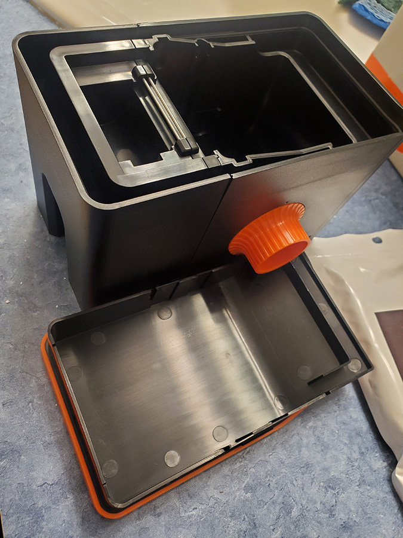
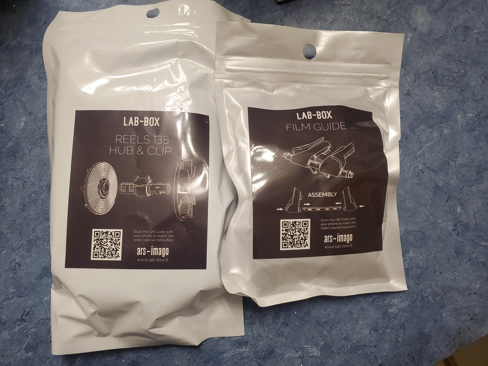
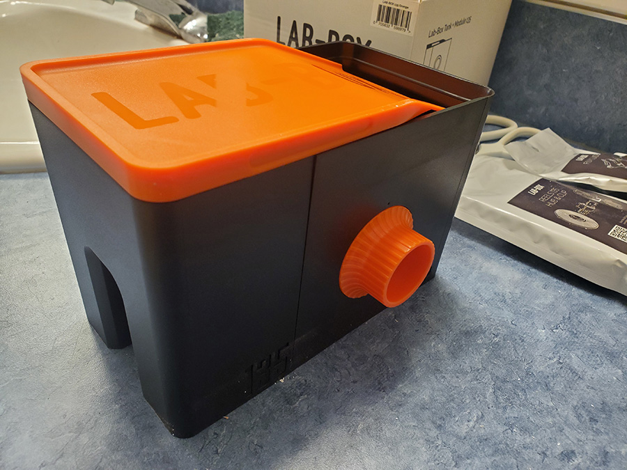
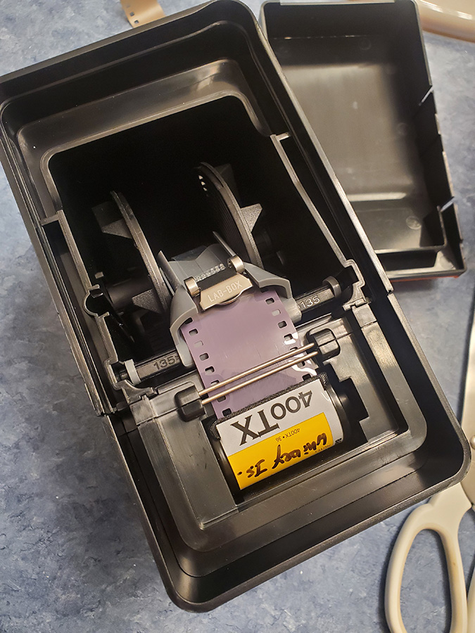
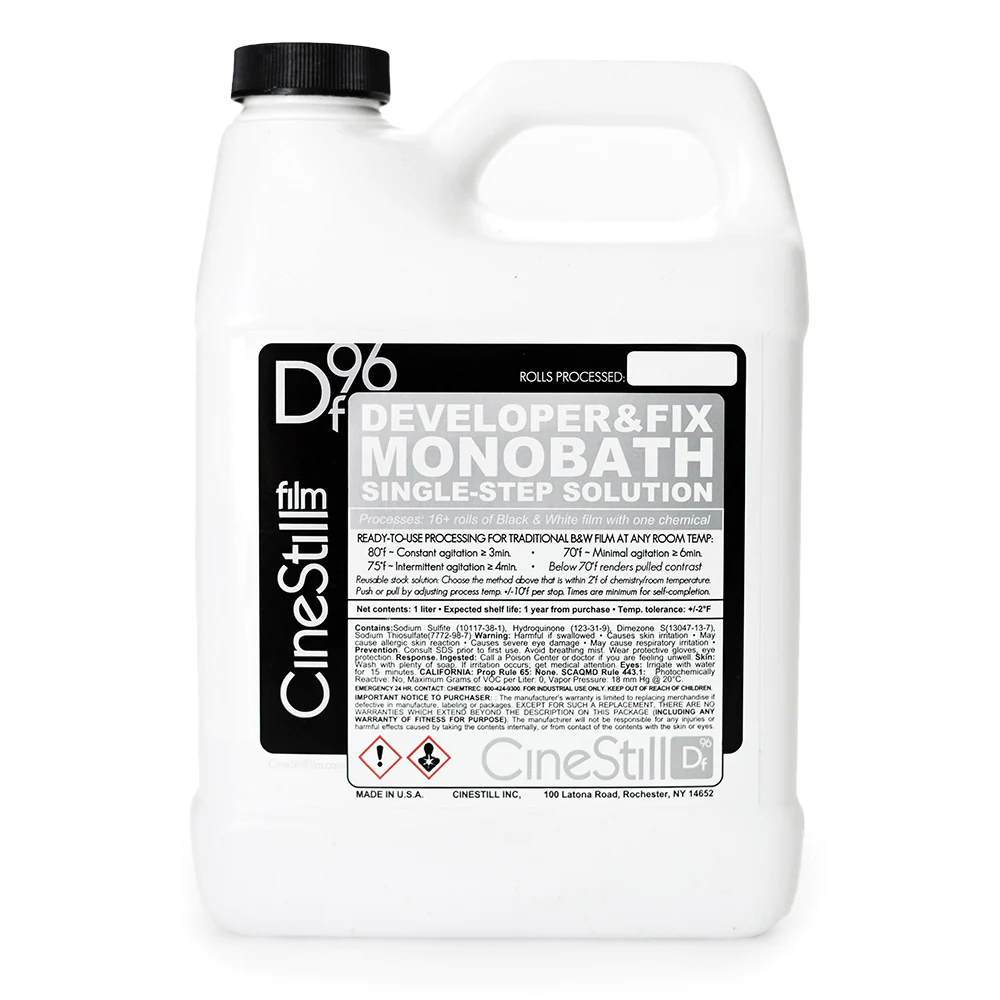
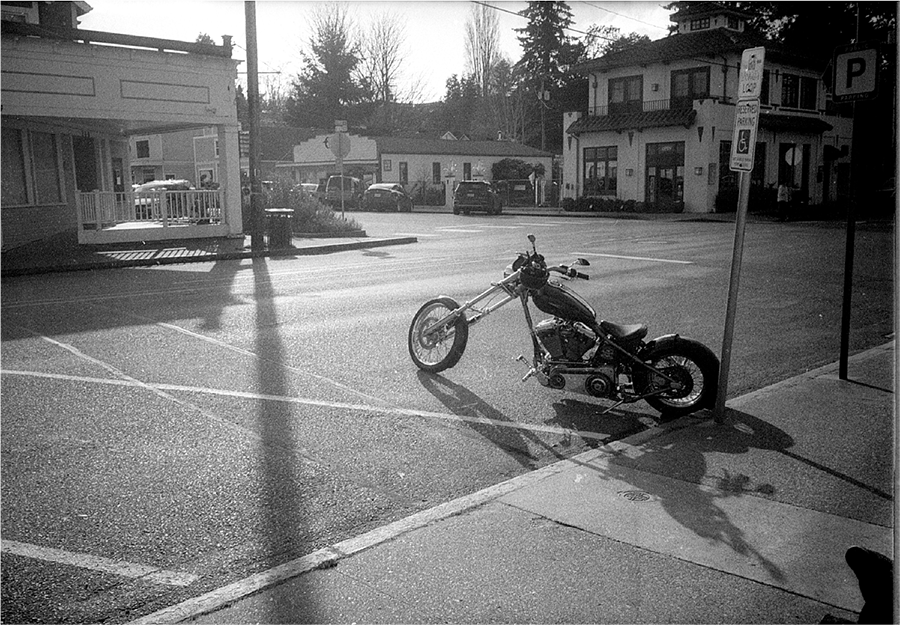

Ars Imago Labbox and DF96 monobath
Feburary 19, 2023
Bellevue, WA
It's been a few years since I've last developed any film, back then I was working with my trusty Paterson tank and Ilford Ilfordsol-3 set up. It was pretty fun but also a lot of chemicals and timing to keep track of. Recently, I've got the itch to start working with film again (and the fact that many of my horded film is starting to expire). I wasn't excited about the messiness and multi-step process that involves hiding in a dark room trying to get the film canister open and film reeled into the development reel. So when I saw that there was not only a easy load daylight tank, but also a monobath (read: only one chemical bath needed) developer for black and white film I was very excited to give it a try.
I got the package from Cinestill just when I got back from a short trip to Whidbey island and had a fresh roll of Tri-X ready to develop. The whole set up too me no more than 15 minuets with careful rewatching of the Cinestill instruction video. It shouldn't have taken me so long, but I wanted to make sure I got it right.
Package and setup
The Labbox is pretty simple, there is a section that holds the film, a section that holds the reel, and a cover that covers both.
The 2 internal parts are the film reel to hold the film, and the film guide to assist with loading the reel internally.
Once put together, the Labbox is pretty small and compact, not bigger than a loaf of bread.
Prepare for development
When you are ready to start, get the film leader (the very tip of the film (before the actual exposed part) out and snip that off. Place the film canister in the film chamber on the film side and clip the film with the clip from the reel. If this doesn't make sense, I highly recommend to watch the very helpful video produced by Cinestill to set up and develop in the Lab Box.

The internals of the Labbox, film loaded and ready to be covered and wound on to the reel.
Things you will need to use the Lab Box
- A timer (any timer will work, especially your phone)
- A source of water (a sink with a faucet)
- A thermometer
- Scissors
- Some clips (use this to clip film somewhere to hang dry)
- Safety equipment; recommend gloves, goggles, and facemask (we are working with chemicals)
Bath and Agitation
The rest of the process to get the film delveloped was around 7-8 minutes, main because my "photo lab" was downstairs and bit colder. With temperatures around 20 deg C (68 deg F) the recommended development time was about 6 minutes of minimal agitation. I poured in 300ml (aprox 10oz) of the monobath formula into the Lab Box and started the timer and turning the agitation dial.
Image of Cinestill's DF96 Monobath liquid version. Image from Cinestill website.
DF96 Development time chart
| Agitation method | Development | Chemical bath temperature | Agitation time (how long to turn the knob) |
|---|---|---|---|
| Constant agitation | Native ISO | 80°F (27°C) | at least 3 min |
| Intermittent agitation | Native ISO | 75°F (24°C) | at least 4 min |
| Minimal agitation | Native ISO | 70°F (21°C) | at least 6 min |
| Minimal agitation | Push +1 | 80°F (27°C) | at least 6 min |
| Intermittent agitation | Push +1 | 85°F (30°C) | at least 4 min |
| Constant agitation | Push +1 | 90°F (32°C) | at least 3 min |
| Constant agitation | Pull -1 | 70°F (21°C) | at least 4 min |
| Intermittent agitation | Pull -1 | 65°F (18°C) | at least 6 min |
Wash and dry
After the 6 minutes were up, the next step was the wash. There are 2 ways you can do this. The easy way is to run remove the lid and 35mm component leaving just the film in the reel side, and run that under running cold tap water for 5 minutes. The other more water conservation friendly way is to fill the reel side with water and empty it 7 times.
Hang your now clean and washed film up, and allow it to dry overnight. And then you are done! Ready to scan your newly developed film. Prety easy over all. I know that the Lab Box can only develop one roll at a time. It must be fully dried before you start again, making this not convenient if you are looking to develop multiple rolls at a time. But this works great for my infrequent film shooting.
Note: For every time you REUSE the DF96 monobath formula, you must add an additional 15 seconds of development time. The monobath can be reused in total to develop 8 rolls of film before it needs to be disposed.
Final thoughts
Yes, this is exactly what I wanted. An easy way to load and develop a single roll of film at a time. This will work with black and white film, C41 color film, there are modules for 135 film (regular 35mm rolls both 24 and 36 exposures) and also 120 film (Medium format) making this a very flexible system. As long as you aren't looking to develop multiple rolls at a time (use a Paterson or a Jobo for that!) it'll be overall very simple. Tons of tutorial online to help you get started. The DF96 monobath is the perfect companion to the Lab Box system, a truely one-and-done philisophy that simplifies home film development.

Ebby's Landing, Whidbey island, WA.
A street view of Coupville, Whidbey island, WA.
For my first run results check out my Whidbey island album images (the color images are from my smartphone).
Future
I look forward to trying out some of the other development possibilities, including, C41 color (which Cinestill has a 2 bath also VERY simple flow) and maybe even develop medium format when I get a medium format camera.
References
Check out the manufacture of the Lab Box Ars Imago website for Lab Box (English)
Where I bought my Lab box and Cinestill DF96 monobath developer Cinestill website
Cinestill Youtube channel with a step-by-step instruction video Black and White Film Processing with the ARS-IMAGO Lab-Box